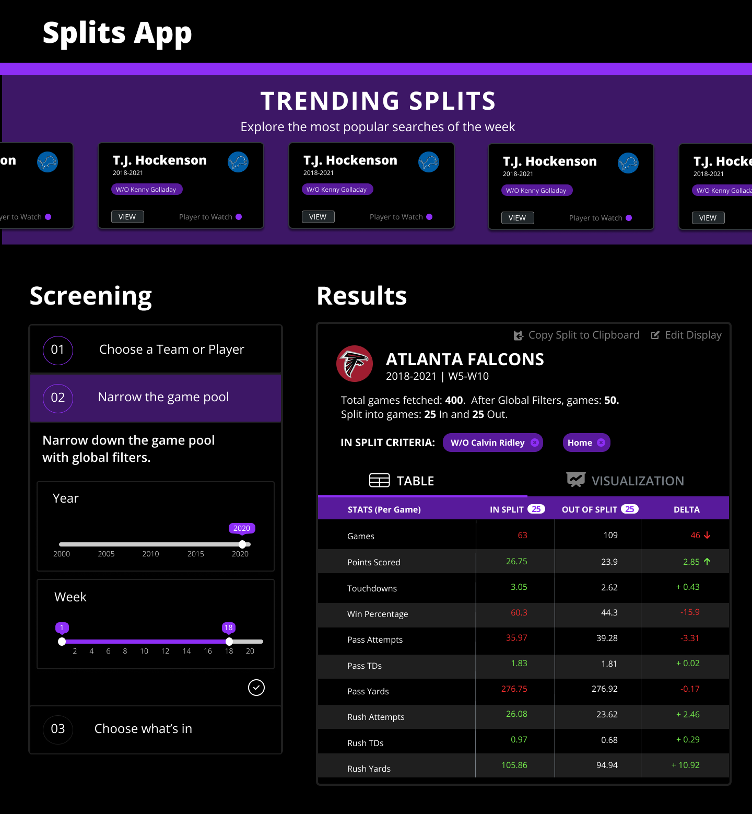
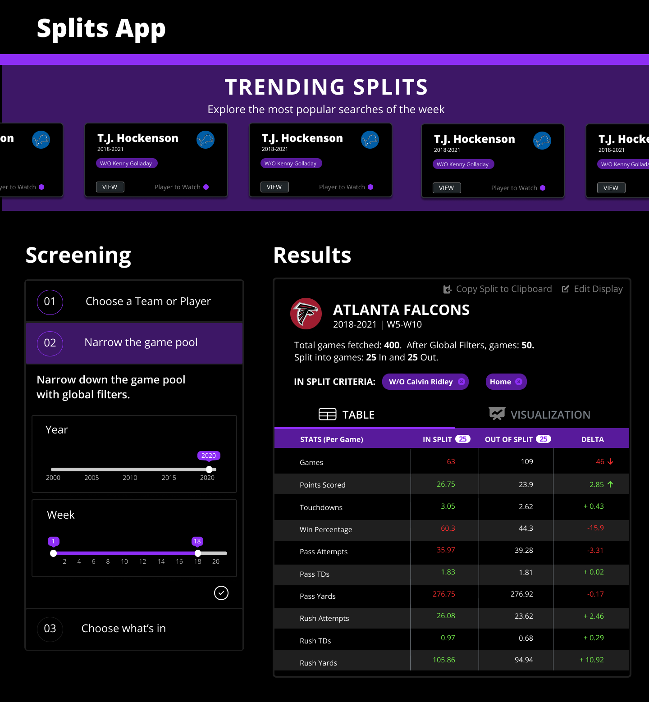

The NFL Splits tool is available to FTN Network Premium members. It is used to help users understand how teams and players have performed in previous years. We performed a redesign primarily to improve the visual design and increase usability, especially for users who have less football proficiency.
Context
About FTN Network
FTN Networkis a company cofounded in 2020 by Kevin Adams and Brad Evans, aiming to provide in-depth entertainment and analysis from industry-leading experts while developing unique user-friendly tools to help optimize user’s success on all fantasy platforms. The tool we worked on this summer is a part of their NFL tools section. I worked alongside a developer on three tools - the Splits tool, the Pace tool, and the Wide Receiver vs. Cornerback (WR vs. CB) tool - to add new search/filter features and simplify the user experience.
It was such a transformative experience to be able to work on these tools throughout the summer. Our goal was to transform key stats into easy to understand and approachable numbers that could help anyone be at the top of their fantasy league. Throughout this project, I conducted competitor research to identify gaps and opportunities and iterated through the design process to create the tools that are currently live on the FTN sites (FTNFantasy.com, FTNdaily.com, and FTNbets.com).
About the Scope
We revisited one of the first tools we made for FTN Network - the Splits Tool - with new ideas ahead of the upcoming NFL season. The NFL Splits tool is available to FTN Network Premium members. Its aim is to help users understand how teams and players have performed in previous years. We performed a redesign primarily to improve the visual design and increase usability, especially for users who have less football proficiency. We aimed to improve the design by adhering to a proposed style guide that will make for a more consistent product. Adding more quality of life features will help acclimate first time users and enable power users to do more. A new visualization to reveal insightful patterns, the ability to share, and new table settings are just a few of the new ideas we wanted to bring. The Splits Tool v1 laid the foundation, v2 takes it to the next level.
Our Stakeholders:
For the duration of the summer, we closely worked with Eliot Crist, the COO/CTO of FTN Network.
Research
Setting our Scope
Our first step to begin this project was to do a deep dive on the current version of the Splits Tool and identify areas of improvement.

The Splits Tool v1 at first glance
We categorized all of the changes we hoped to make and prioritized them based on usability, time to complete, and reusability. The four sections we focused on were (1) New features, (2) Design - including usability, differentiators, and bells & whistles, and (4) Bug fixes.
Users and Audience
We identified two types of users that we saw were most likely to be using this tool.
-
Existing Users: Football Enthusiasts
They never miss a game and always review their stats. -
New Users: Casual watchers and Fantasy players
People with an interest in football and is in a fantasy league. They want to level up in an easy and low-cost way.
Our Goal
Referring back to our original wireframes and mockups, we adjusted and presented our new idea that incorporates old elements and new ones as well.
New notable features introduced were (1) the ability to copy the url containing the split, which would make it easier for users to share the split with others, (2) a parallel coordinates visualization that allows users to look at the individual game data to identify patterns or abnormalities, and (3) introducing trending cards to highlight on one hand, interesting players/teams to watch, and on the other hand, sample uses of the tool.
Design Process
Based on our identified areas of improvement, we created new screens to present to our stakeholder.


Initial Mockups shared with the FTN Team for the start of the redesign.
Component Library
After agreeing on the direction to take the redesign, we worked on the development of each individual component of the design.

Sample iterations of different components.
User Testing
As we started to put the components together and refine the combined project, we then moved on to usability testing. We asked 3 users to do an in-depth survey of our tool. Namely, we wanted to see if our changes helped first-time users understand how to navigate the different types of filters. We asked questions like:
- Compare the Carolina Panthers TDs at home vs away.
- How do the Panthers do with Christian McCaffery vs. without?
- Compare Julio Jones 2019 performance with 2020.
We found major commonalities between the users. The number one request was for a hierarchy to help users
understand what they should do first. Because of this, we revisted our designs and reworked how we displayed
filters into a "stepper": a visual depiction of a process to guide users through creating a split.
I created two versions of this stepper, one being vertical which would adapt well across different device sizes,
and horizontal, which helps draw the user's attention to the filter process from the beginning.
.png) 

The mockups for a horizontal stepper (left) and vertical stepper (right).
We went back to our initial group of users and presented the new designs to them, in additional to the working model. We got positive feedback that the stepper helped make the tool more clear, and we worked to clean up the unclear language as well add instructions in relevant locations. Some users had preferences for the horizontal stepper, whereas others had a preference for the vertical stepper. Given the time constraints of our project, we chose to move forward with the vertical design to focus on responsivity first.
Final Design
Trending Cards at the top of the screen indicate interesting Splits to look at and come premade with filters.
The improved stepper helping users understand how to select their split.
The new visualization that helps users identify any irregular patterns while looking at the entire, non-aggregated data.
Reflection
Seeing this project from where it first started last year, with the first iteration of the splits tool, to now
where it is now is very rewarding. Both from a visual standpoint and a utility standpoint, users and
stakeholders agree that it is a significant level-up from the previous version.
This project really helped me break down assumptions. Working with a group of users who are extremely
knowledgeable about the field of football, there was a lot for me to learn. Having those opportunities to hear
from real-life/real-time users of the app was beneficial, as we were able to use their feedback to
make major changes to the tool before its launch.
Next Steps
We're continuously releasing weekly updates to each tool, with a plan to continue iterating on our design throughout the 2021-2022 NFL season. As more data comes and as more users frequent the site, we hope to better understand how to help users find the information they need in the best way possible.